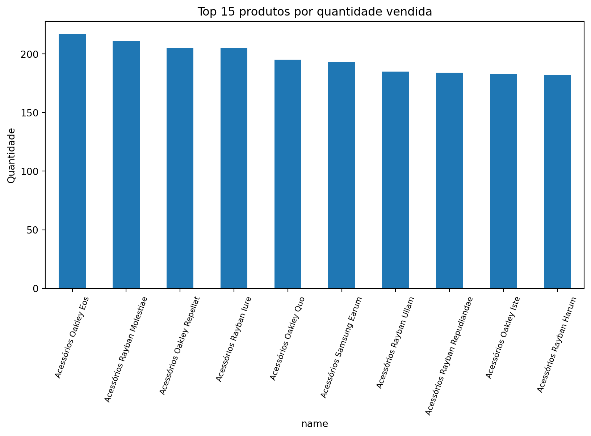
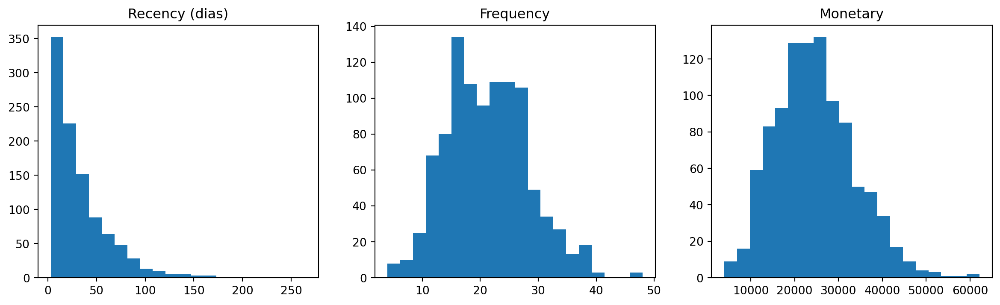
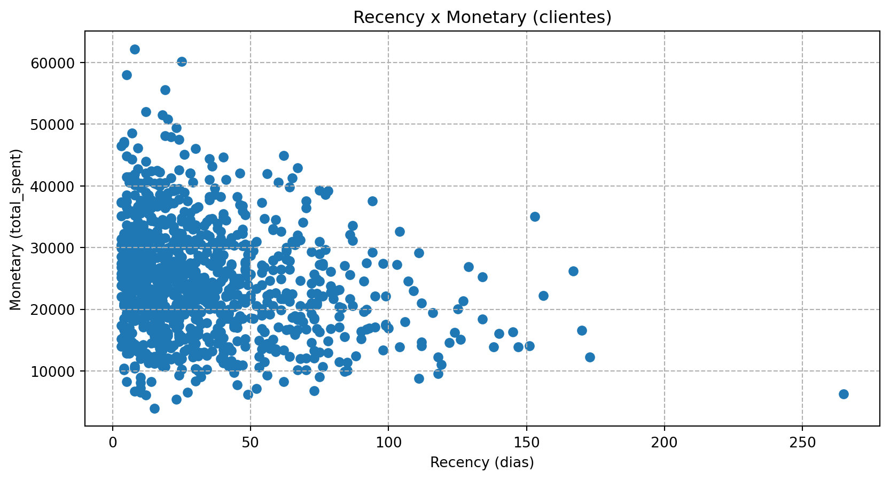
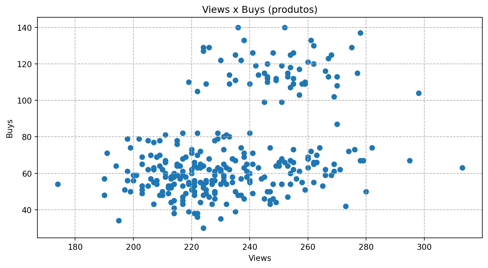

Hybrid Recommender System for E-commerce (End-to-End)
Author
Gabriel Ferreira
Published
December 19, 2025
Database Setup & SQL Exploration
Antes de qualquer etapa de modelagem em Python, os dados passam por um processo de estruturação, ingestão e validação em banco de dados relacional, típicos de um ambiente real de analytics em e-commerce.
Entity-Relationship (ER) Diagram
O diagrama abaixo ilustra o modelo relacional do banco, destacando entidades centrais como clientes, produtos, transações e visualizações, bem como seus relacionamentos.
📌 Diagrama ER do banco de dados

Data Ingestion & Validation in MySQL
Após a definição do schema, as tabelas são criadas e os dados são carregados diretamente no banco utilizando linha de comando e MySQL Workbench, reproduzindo práticas comuns de ingestão em ambientes analíticos.
def run_sql_pure(sql: str, params: dict=None):""" Executa SQL puro (string) e retorna um pandas.DataFrame. Exibe a query (útil para portfólio) e retorna o DataFrame. """print("---- Executing SQL ----")print(sql.strip())print("-----------------------") df = pd.read_sql_query(sql=text(sql), con=engine, params=params) display(df.head(10))return df# Configuração do matplotlibplt.rcParams['figure.figsize'] = (10,5)plt.rcParams['grid.linestyle'] ='--'
O primeiro passo da EDA é validar a integridade estrutural das tabelas.
Contagens por tabela:
Show Code
sql ="""SELECT (SELECT COUNT(*) FROM customers) AS n_customers, (SELECT COUNT(*) FROM products) AS n_products, (SELECT COUNT(*) FROM transactions) AS n_transactions, (SELECT COUNT(*) FROM product_views) AS n_views;"""df = run_sql_pure(sql)vals = df.iloc[0].to_dict()names =list(vals.keys()); counts =list(vals.values())
---- Executing SQL ----
SELECT
(SELECT COUNT(*) FROM customers) AS n_customers,
(SELECT COUNT(*) FROM products) AS n_products,
(SELECT COUNT(*) FROM transactions) AS n_transactions,
(SELECT COUNT(*) FROM product_views) AS n_views;
-----------------------
n_customers
n_products
n_transactions
n_views
0
1000
300
21123
70000
Valores ausentes por tabela
Show Code
# lista de tabelas a verificartables = ['customers', 'products', 'transactions', 'product_views']results = []for t in tables: q_cols =f""" SELECT COLUMN_NAME FROM INFORMATION_SCHEMA.COLUMNS WHERE TABLE_SCHEMA = '{DB_NAME}' AND TABLE_NAME = '{t}' ORDER BY ORDINAL_POSITION; """ cols_df = pd.read_sql_query(sql=text(q_cols), con=engine) cols = cols_df['COLUMN_NAME'].tolist() num_cols =len(cols)# contar linhas q_rows =f"SELECT COUNT(*) AS n_rows FROM {t};" n_rows = pd.read_sql_query(sql=text(q_rows), con=engine).iloc[0,0]if n_rows ==0or num_cols ==0: null_count =0else: null_expr =" + ".join([f"SUM(`{c}` IS NULL)"for c in cols]) q_nulls =f"SELECT {null_expr} AS null_count FROM {t};" null_count = pd.read_sql_query(sql=text(q_nulls), con=engine).iloc[0,0] total_cells =int(n_rows) *int(num_cols) pct_null = (null_count / total_cells *100) if total_cells >0else0.0 results.append({"table": t,"n_rows": int(n_rows),"n_cols": int(num_cols),"total_cells": int(total_cells),"null_count": int(null_count),"pct_null": round(pct_null, 4) })df_missing_tables = pd.DataFrame(results)display(df_missing_tables)
table
n_rows
n_cols
total_cells
null_count
pct_null
0
customers
1000
8
8000
0
0.0
1
products
300
7
2100
0
0.0
2
transactions
21123
6
126738
0
0.0
3
product_views
70000
6
420000
0
0.0
Duplicados e chaves (checar chave primária única)
Show Code
sql ="""SELECT COUNT(*) AS total_rows, COUNT(DISTINCT transaction_id) AS distinct_transaction_id, COUNT(DISTINCT CONCAT(customer_id,'-',DATE(transaction_date))) AS distinct_cust_dateFROM transactions;"""df = run_sql_pure(sql)print(df.to_string(index=False))
---- Executing SQL ----
SELECT
COUNT(*) AS total_rows,
COUNT(DISTINCT transaction_id) AS distinct_transaction_id,
COUNT(DISTINCT CONCAT(customer_id,'-',DATE(transaction_date))) AS distinct_cust_date
FROM transactions;
-----------------------
Os resultados confirmam que os dados estão completos e consistentes, permitindo avançar para as análises sem necessidade de limpeza estrutural.
Visualizações e Insights
Nesta etapa, exploramos o comportamento do negócio por meio de SQL, respondendo perguntas como: * Quais produtos vendem mais? * Onde está concentrada a receita? * Existe sazonalidade? * Como os clientes se distribuem em termos de recência, frequência e gasto? * Qual o nível de sparsity da matriz cliente × produto?
Distribuição de preços - produtos
Show Code
sql ="SELECT price FROM products WHERE price IS NOT NULL;"df_price = run_sql_pure(sql)df_price['price'] = pd.to_numeric(df_price['price'], errors='coerce')plt.hist(df_price['price'].dropna(), bins=30)plt.title("Product Price Distribuction")plt.xlabel("Price")plt.ylabel("Frequency")plt.show()
---- Executing SQL ----
SELECT price FROM products WHERE price IS NOT NULL;
-----------------------
price
0
1348.64
1
1231.56
2
442.11
3
1459.57
4
471.71
5
426.05
6
306.27
7
1119.19
8
1236.90
9
126.46
Top Produtos por quantidade e por receita
Show Code
sql ="""SELECT p.product_id, p.name, SUM(t.quantity) AS total_qty, SUM(t.total_value) AS total_revenueFROM transactions tJOIN products p ON t.product_id = p.product_idGROUP BY p.product_idORDER BY total_qty DESCLIMIT 10;"""df_top = run_sql_pure(sql)ax = df_top.plot.bar(x='name', y='total_qty', legend=False)plt.xticks(rotation=70, fontsize=8)plt.title("Top 15 produtos por quantidade vendida")plt.ylabel("Quantidade")plt.show()# revenue bardf_top.plot.bar(x='name', y='total_revenue')plt.xticks(rotation=70, fontsize=8)plt.title("Top 15 produtos por receita (mesmos produtos)")plt.ylabel("Receita")plt.show()
---- Executing SQL ----
SELECT p.product_id, p.name,
SUM(t.quantity) AS total_qty,
SUM(t.total_value) AS total_revenue
FROM transactions t
JOIN products p ON t.product_id = p.product_id
GROUP BY p.product_id
ORDER BY total_qty DESC
LIMIT 10;
-----------------------
product_id
name
total_qty
total_revenue
0
251
Acessórios Oakley Eos
217.0
186915.12
1
192
Acessórios Rayban Molestiae
211.0
108861.23
2
95
Acessórios Oakley Repellat
205.0
18025.65
3
82
Acessórios Rayban Iure
205.0
185129.35
4
177
Acessórios Oakley Quo
195.0
221867.10
5
161
Acessórios Samsung Earum
193.0
279170.64
6
235
Acessórios Rayban Ullam
185.0
156080.80
7
169
Acessórios Rayban Repudiandae
184.0
211294.56
8
211
Acessórios Oakley Iste
183.0
91657.38
9
49
Acessórios Rayban Harum
182.0
64921.22

Vendas por mês
Show Code
sql ="""SELECT DATE_FORMAT(transaction_date, '%Y-%m') AS ym, COUNT(*) AS n_items, SUM(total_value) AS revenueFROM transactionsGROUP BY ymORDER BY ym;"""df_ts = run_sql_pure(sql)df_ts['ym'] = pd.to_datetime(df_ts['ym'] +'-01')plt.plot(df_ts['ym'], df_ts['revenue'])plt.title("Receita por mês")plt.xlabel("Mês")plt.ylabel("Receita")plt.grid(True)plt.show()
---- Executing SQL ----
SELECT DATE_FORMAT(transaction_date, '%Y-%m') AS ym,
COUNT(*) AS n_items,
SUM(total_value) AS revenue
FROM transactions
GROUP BY ym
ORDER BY ym;
-----------------------
ym
n_items
revenue
0
2024-12
965
1078916.67
1
2025-01
1828
2176511.82
2
2025-02
1612
1812512.41
3
2025-03
1741
2033208.48
4
2025-04
1806
2085717.98
5
2025-05
1749
2003141.91
6
2025-06
1675
1968112.97
7
2025-07
1915
2197290.58
8
2025-08
1861
2203234.08
9
2025-09
1632
1932849.30
RFM - tabela e histogramas
Show Code
sql ="""WITH last AS ( SELECT customer_id, DATEDIFF(CURDATE(), MAX(DATE(transaction_date))) AS recency_days, COUNT(*) AS frequency, SUM(total_value) AS monetary FROM transactions GROUP BY customer_id)SELECT * FROM last;"""df_rfm = run_sql_pure(sql)# Histogramsfig, axes = plt.subplots(1,3, figsize=(15,4))axes[0].hist(df_rfm['recency_days'].dropna(), bins=20); axes[0].set_title('Recency (dias)')axes[1].hist(df_rfm['frequency'].dropna(), bins=20); axes[1].set_title('Frequency')axes[2].hist(df_rfm['monetary'].dropna(), bins=20); axes[2].set_title('Monetary')plt.show()# scatter recency x monetaryplt.scatter(df_rfm['recency_days'], df_rfm['monetary'])plt.xlabel('Recency (dias)'); plt.ylabel('Monetary (total_spent)')plt.title('Recency x Monetary (clientes)')plt.grid(True)plt.show()
---- Executing SQL ----
WITH last AS (
SELECT customer_id,
DATEDIFF(CURDATE(), MAX(DATE(transaction_date))) AS recency_days,
COUNT(*) AS frequency,
SUM(total_value) AS monetary
FROM transactions
GROUP BY customer_id
)
SELECT * FROM last;
-----------------------
customer_id
recency_days
frequency
monetary
0
1
13
14
14261.37
1
2
17
26
26203.35
2
3
75
23
25696.87
3
4
33
26
31203.42
4
5
126
11
16216.30
5
6
26
29
26575.41
6
7
38
20
21554.50
7
8
37
22
31804.66
8
9
25
21
24763.75
9
10
8
19
18695.84


Distribuição de compras por cliente
Show Code
sql ="""SELECT customer_id, COUNT(*) AS purchasesFROM transactionsGROUP BY customer_id;"""df_purchases = run_sql_pure(sql)plt.hist(df_purchases['purchases'], bins=30)plt.title("Distribuição de número de compras por cliente")plt.xlabel("Número de compras")plt.ylabel("Clientes")plt.show()
---- Executing SQL ----
SELECT customer_id, COUNT(*) AS purchases
FROM transactions
GROUP BY customer_id;
-----------------------
customer_id
purchases
0
1
14
1
2
26
2
3
23
3
4
26
4
5
11
5
6
29
6
7
20
7
8
22
8
9
21
9
10
19
Conversão views -> buys por produto
Show Code
sql ="""SELECT p.product_id, p.name, COALESCE(v.views,0) AS views, COALESCE(b.buys,0) AS buys, ROUND(COALESCE(b.buys,0) / NULLIF(COALESCE(v.views,0),0) * 100,2) AS conversion_pctFROM products pLEFT JOIN ( SELECT product_id, COUNT(*) AS views FROM product_views GROUP BY product_id) v ON p.product_id = v.product_idLEFT JOIN ( SELECT product_id, COUNT(*) AS buys FROM transactions GROUP BY product_id) b ON p.product_id = b.product_id;"""df_conv = run_sql_pure(sql)plt.scatter(df_conv['views'], df_conv['buys'])plt.xlabel('Views'); plt.ylabel('Buys')plt.title('Views x Buys (produtos)')plt.grid(True)plt.show()# print top products with unusually high conversion (>80%)high_conv = df_conv[df_conv['conversion_pct'] >80].sort_values('conversion_pct', ascending=False)print("Produtos com conversão > 80% (exemplo):")display(high_conv[['product_id','name','views','buys','conversion_pct']].head(10))
---- Executing SQL ----
SELECT p.product_id, p.name,
COALESCE(v.views,0) AS views,
COALESCE(b.buys,0) AS buys,
ROUND(COALESCE(b.buys,0) / NULLIF(COALESCE(v.views,0),0) * 100,2) AS conversion_pct
FROM products p
LEFT JOIN (
SELECT product_id, COUNT(*) AS views
FROM product_views
GROUP BY product_id
) v ON p.product_id = v.product_id
LEFT JOIN (
SELECT product_id, COUNT(*) AS buys
FROM transactions
GROUP BY product_id
) b ON p.product_id = b.product_id;
-----------------------
product_id
name
views
buys
conversion_pct
0
1
Eletrônicos LG Repellendus
254
67
26.38
1
2
Roupas Puma Ad
199
50
25.13
2
3
Acessórios Apple Assumenda
262
120
45.80
3
4
Eletrônicos Apple Fugit
269
61
22.68
4
5
Calçados Adidas Nisi
197
51
25.89
5
6
Eletrônicos LG Architecto
237
48
20.25
6
7
Eletrônicos Apple Magni
254
60
23.62
7
8
Calçados Mizuno Vero
251
54
21.51
8
9
Casa Brastemp Accusamus
211
60
28.44
9
10
Casa Tramontina Aut
208
69
33.17

Produtos com conversão > 80% (exemplo):
product_id
name
views
buys
conversion_pct
Vendas por categoria
Show Code
sql ="""SELECT p.category, COUNT(*) AS n_items, SUM(t.total_value) AS revenueFROM transactions tJOIN products p ON t.product_id = p.product_idGROUP BY p.categoryORDER BY revenue DESC;"""df_cat = run_sql_pure(sql)df_cat.plot.bar(x='category', y='revenue')plt.title("Receita por categoria")plt.xticks(rotation=60)plt.ylabel("Receita")plt.show()
---- Executing SQL ----
SELECT p.category, COUNT(*) AS n_items, SUM(t.total_value) AS revenue
FROM transactions t
JOIN products p ON t.product_id = p.product_id
GROUP BY p.category
ORDER BY revenue DESC;
-----------------------
category
n_items
revenue
0
Acessórios
6791
8093968.03
1
Casa
4201
4853473.99
2
Roupas
3493
4130537.90
3
Eletrônicos
3393
3875183.58
4
Calçados
3245
3635461.14
AOV (Average Order Value)
Show Code
sql ="""SELECT customer_id, DATE(transaction_date) AS order_date, SUM(total_value) AS order_valueFROM transactionsGROUP BY customer_id, DATE(transaction_date);"""df_orders = run_sql_pure(sql)aov = df_orders['order_value'].mean()print(f"AOV (média de valor por pedido - aproximação): R$ {aov:.2f}")plt.hist(df_orders['order_value'], bins=30)plt.title("Distribuição do valor por pedido (aprox.)")plt.xlabel("Order value")plt.ylabel("Contagem")plt.show()
---- Executing SQL ----
SELECT customer_id, DATE(transaction_date) AS order_date, SUM(total_value) AS order_value
FROM transactions
GROUP BY customer_id, DATE(transaction_date);
-----------------------
customer_id
order_date
order_value
0
847
2025-10-23
590.62
1
61
2025-03-13
1701.93
2
859
2025-03-20
6656.51
3
162
2025-02-09
3413.34
4
690
2025-09-10
715.62
5
938
2025-10-22
2335.58
6
457
2025-10-27
2188.03
7
152
2025-08-30
3409.31
8
757
2025-09-10
511.88
9
64
2025-01-08
717.88
AOV (média de valor por pedido - aproximação): R$ 2083.08
Matriz cliente x produto - densidade (SPARSITY)
Show Code
sql ="""SELECT (SELECT COUNT(DISTINCT customer_id) FROM transactions) AS n_customers_active, (SELECT COUNT(DISTINCT product_id) FROM transactions) AS n_products_sold, (SELECT COUNT(*) FROM transactions) AS n_transactions;"""df_dim = run_sql_pure(sql)n_customers =int(df_dim['n_customers_active'].iloc[0])n_products =int(df_dim['n_products_sold'].iloc[0])n_trans =int(df_dim['n_transactions'].iloc[0])possible = n_customers * n_productssparsity =1- (n_trans / possible)print(f"Clientes: {n_customers}, Produtos: {n_products}, Transações: {n_trans}")print(f"Sparsity (aprox): {sparsity:.6f}")
---- Executing SQL ----
SELECT (SELECT COUNT(DISTINCT customer_id) FROM transactions) AS n_customers_active,
(SELECT COUNT(DISTINCT product_id) FROM transactions) AS n_products_sold,
(SELECT COUNT(*) FROM transactions) AS n_transactions;
-----------------------
abordagem híbrida para mitigar limitações individuais.
Criação dos Algoritimos
Com base na EDA, foi definida uma arquitetura híbrida onde cada componente resolve um problema específico:
Componente
Papel
Item-Item CF
Personalização baseada em comportamento
Content-Based
Similaridade semântica e cold start
Association Rules
Cross-sell contextual
O objetivo não é substituir modelos, mas combinar sinais complementares.
Item-Item Collaborative Filtering
Nesta etapa, construímos um sistema de recomendação baseado exclusivamente em padrões históricos de compra. O Item-Item CF recomenda itens semelhantes aos que o usuário já comprou, medindo similaridade entre itens a partir do comportamento dos usuários (quem comprou A também comprou B).
O modelo Item-Item Collaborative Filtering identifica produtos semelhantes a partir de padrões de compra reais, permitindo recomendações personalizadas e escaláveis. A aplicação de shrinkage reduz ruído causado por co-ocorrências raras, tornando o sistema mais confiável em cenários de alta esparsidade, típicos de e-commerce.
O score gerado pelo Item-Item CF representa uma medida relativa de afinidade entre produtos, baseada exclusivamente em padrões históricos de compra. Ele é utilizado para ranquear itens recomendados e não deve ser interpretado como probabilidade absoluta.
Content-Based Filtering (TF-IDF)
Apesar da força do sinal comportamental, o CF apresenta limitações:
Limitação
Impacto
Cold start de produto
Produto novo nunca é recomendado
Dependência do histórico
Pouca explicação semântica
Sparsity alta
Alguns itens quase não aparecem
Para mitigar isso, utilizamos Content-Based Filtering, representando produtos por seus atributos textuais.
O modelo baseado em conteúdo recomenda produtos semanticamente similares, ampliando a cobertura do sistema e permitindo recomendações mesmo para itens com pouco histórico.
Offline Evaluation — CF vs CB
Antes de combinar os modelos em uma abordagem híbrida, avaliamos separadamente o Item-Item Collaborative Filtering (CF) e o Content-Based Filtering (CB). Essa etapa é fundamental para entender a contribuição individual de cada sinal, identificar suas forças e limitações e evitar que um modelo dominante mas ruidoso prejudique o desempenho final.
A avaliação isolada permite comparar desempenho em métricas de ranking, ajustar pesos do modelo híbrido de forma fundamentada e justificar tecnicamente a escolha da arquitetura. Em cenáriosde e-commerce, essa prática é essencial para garantir que o modelo híbrido gere ganho incremental em relação aos baselines individuais, em vez de apenas misturar sinais sem benefício mensurável.
Cria um split temporal do tipo Leave-Last-Out para avaliação:
def hit_rate(model_func, k=10): hits =0 total =0for user_id insorted(test_interactions.keys()): true_item = test_interactions[user_id] recs = model_func(user_id, k)if true_item in recs: hits +=1 total +=1return hits / total
Resultados — CF vs CB:
Show Code
for k in [5, 10]: hr_cf = hit_rate(recommend_cf_eval, k) hr_cb = hit_rate(recommend_cb_eval, k)print(f"Hit Rate @ {k}")print(f" Item-Item CF: {hr_cf:.4f}")print(f" Content-Based: {hr_cb:.4f}")print("-"*30)
Hit Rate @ 5
Item-Item CF: 0.0260
Content-Based: 0.0290
------------------------------
Hit Rate @ 10
Item-Item CF: 0.0500
Content-Based: 0.0610
------------------------------
Antes da construção do modelo híbrido, avaliamos separadamente o desempenho do Item-Item Collaborative Filtering e do Content-Based Filtering utilizando uma estratégia Leave-One-Out e a métrica Hit Rate@K.
Os resultados indicam que o modelo colaborativo apresenta maior capacidade preditiva, refletindo a força do sinal comportamental em dados implícitos. O Content-Based, embora com desempenho inferior isoladamente, mostrou-se consistente e adequado para complementar o sistema, especialmente em cenários de cold start e aumento de cobertura.
Conclusão: O CF apresenta melhor desempenho isolado, enquanto o CB agrega valor incremental — justificando a combinação.
Hybrid Model — Weight Tuning
Nesta etapa, testamos diferentes combinações de pesos entre CF e CB para maximizar performance.
A combinação dos modelos colaborativo e baseado em conteúdo resultou em melhoria consistente de desempenho. O melhor resultado foi obtido com pesos w_cf=0.6 e w_cb=0.4, evidenciando que o sinal comportamental deve ser predominante, mas complementado por similaridade semântica.
Esses resultados confirmam que o modelo híbrido captura múltiplas dimensões do comportamento do usuário, reduz limitações individuais dos modelos base e oferece um trade-off mais robusto entre precisão e cobertura.
Association Rules (Apriori)
Além das abordagens colaborativa e baseada em conteúdo, o sistema incorpora Association Rules para capturar padrões explícitos de coocorrência em cestas de compra. Essa técnica permite identificar produtos frequentemente adquiridos juntos, sendo especialmente eficaz para estratégias de cross-sell e aumento do ticket médio.
Diferentemente dos modelos centrados no usuário, as regras de associação operam diretamente sobre transações, tornando-se robustas a cenários de cold start de usuários e altamente interpretáveis para stakeholders de negócio. Integradas ao modelo híbrido, essas regras complementam a personalização com recomendações de produtos complementares.
Analogia simples CF = sugerir outra camisa parecida CB = sugerir camisa da mesma marca Association Rules = sugerir o cinto que normalmente vai junto com a camisa
Ou seja, responder a pergunta: O que costuma ser comprado junto?
Criar as cestas:
Show Code
# Garantir que a coluna 'transaction_date' seja do tipo datetimetransactions['transaction_date'] = pd.to_datetime(transactions['transaction_date'])# Criar uma coluna de "order_id"transactions['order_id'] = ( transactions['customer_id'].astype(str) +'_'+ transactions['transaction_date'].dt.date.astype(str))# Agrupar produtos por pedidobasket = ( transactions .groupby('order_id')['product_id'] .apply(list))basket.head()
As regras de associação foram aplicadas como um sinal complementar de cross-sell, sendo utilizadas apenas quando o histórico do usuário intersecta os antecedentes das regras extraídas. Em cenários onde não há correspondência, o sistema não força recomendações artificiais, preservando a qualidade do ranking
Final Hybrid Recommender
O modelo final combina:
Componente
Papel no sistema
Item-Item CF
Personalização baseada em comportamento
Content-Based
Similaridade semântica / cold start
Association Rules
Cross-sell contextual (checkout)
O híbrido não substitui, ele combina sinais.
Obs: Cada modelo gera scores em escalas diferentes. Precisamos normalizar antes de somar.
O sistema final combina três sinais complementares: Item-Item Collaborative Filtering, Content-Based Filtering e Association Rules. Cada componente atua em um aspecto distinto do problema, garantindo personalização, cobertura e capacidade de cross-sell. As pontuações são normalizadas e combinadas por meio de uma soma ponderada, permitindo ajuste fino do impacto de cada sinal. Essa abordagem reflete práticas reais de mercado, onde sistemas híbridos são preferidos por sua robustez e flexibilidade.
O modelo analisa o histórico do cliente, a similaridade entre produtos e padrões recorrentes de compra conjunta para gerar recomendações personalizadas e contextualizadas, equilibrando relevância individual e oportunidades de aumento de ticket médio. Ou seja, em cenários onde não há correspondência, o sistema não força recomendações artificiais, preservando a qualidade do ranking.
Conclusão
Foi desenvolvido um sistema híbrido de recomendação que combina sinais comportamentais (Item-Item Collaborative Filtering), semânticos (Content-Based Filtering) e contextuais (Association Rules). A arquitetura garante cobertura, personalização e capacidade de cross-sell, respeitando limitações estatísticas dos dados e evitando recomendações artificiais. O modelo reflete práticas reais de produção e foi avaliado de forma incremental, demonstrando ganhos qualitativos em relevância e interpretabilidade.
Offline Artifacts & Deployment Strategy
Os modelos são treinados offline e serializados como artefatos estáticos.
Em produção:
A API apenas carrega artefatos e executa ranking.
⬇️ INSIRA O CÓDIGO AQUI (serialização)
Cloud Deployment (AWS)
A solução é implantada em arquitetura serverless:
S3 para armazenamento de artefatos,
Lambda para inferência,
API Gateway para exposição REST.
🎥 Video — AWS Deploy & API Demo
Conclusion
Este projeto demonstra a construção de um sistema de recomendação híbrido robusto, interpretável e orientado à produção, combinando rigor técnico com impacto direto no negócio.
A abordagem híbrida permite equilibrar personalização, cobertura e oportunidades de cross-sell, refletindo práticas reais adotadas em plataformas de e-commerce em escala.